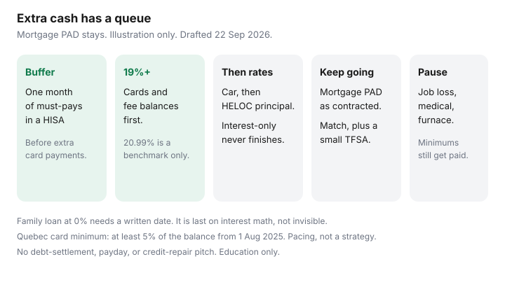

Personal Finance · Canada
A Practical Canadian Debt Payoff Plan for Middle-Aged Households With Kids and a Mortgage
Most payoff slogans assume a single person, no kids, and a mortgage that can wait. A middle-aged household cannot pause childcare, skip the mortgage PAD, or empty the HISA to feel “debt free” on a Tuesday and put groceries on a card on Thursday. The plan has to attack expensive balances and still fund the month.
This is that plan: a full inventory, a buffer you do not raid, an order that starts with fees and rates around 19% and up, a minimum registered skim so saving does not go to zero, and a rule for when a real emergency pauses the extra payments. It is education, not credit advice. No settlement product, no payday loan, no credit-repair pitch. FCAC’s debt pages were used 22 Sep 2026.
Disclosure: There is no natural affiliate offer on this page. Saving Optimizer does not promote debt-settlement, payday, or credit-repair services. A lower-rate line of credit is discussed only as a mechanic you already understand from our consolidation guide, not as a product to open from this article. Education only.
Key takeaways
- List every balance: mortgage, HELOC, cards, car, student loan, family loan. Rate, minimum, and who you owe.
- Keep about one month of must-pays in an unregistered HISA before you send extra dollars at debt. Zero cash plus a payoff is how the card refills.
- Order: fees and balances around 19% and up first, then the rate ladder. The mortgage PAD stays contractual. Extra mortgage payments wait until revolving debt is gone.
- Do not turn savings off. Capture an employer match. Keep a small TFSA or FHSA transfer if room exists and the buffer is intact.
- Pause extra payments for a job loss, a medical bill, or a broken furnace. Keep minimums. Use the HISA. Non-profit credit counselling is the hardship path FCAC points to, not a social-media settlement ad.
Inventory: mortgage, HELOC, cards, car, student, family loans
One page, six columns: name, balance, rate, minimum formula, due date, and whether a PAD already exists. Pull statements. Promotional rates need their expiry. A “0% transfer” that becomes 21% in November is a November balance, not a victory.
Include the mortgage even though you will not attack it first. Hiding it makes the household feel more in debt than the plan can touch, and people then do nothing. Include money owed to family. A 0% loan with no date still has a cost, which is the relationship. Put a date on it in writing so it is a plan, not a fog.
| Debt | Balance | Rate on this sheet | Extra payment? |
|---|---|---|---|
| Credit card | $4,800 | 20.99% purchase | First. After minimums on everything else. |
| Car loan | $9,200 | 6.49% illustration | After the card. Keep the contractual payment until then. |
| HELOC | $12,000 | Prime + your spread. Interest-only minimum is common. | Pay principal on a schedule after the card. Interest-only never finishes. |
| Mortgage | Your balance | Your contract | Pay the PAD. Extra prepayments are a later housing decision. |
| Family loan | $2,000 | 0% with a written date | Last for interest math. Do not ghost the date. |
Student loans sit on the same sheet with their actual rate and any repayment assistance you already qualified for. Do not refinance a government student loan into a credit card to “simplify.” That is a rate increase with paperwork. If you are behind, the loan holder’s hardship process comes before a third-party ad.

Protect the emergency buffer before aggressive payoff
Aggressive, on this page, means every spare dollar at the card after a one-month buffer exists. Must-pays: mortgage or rent, utilities, insurance, childcare, debt minimums, the transit or car cost you cannot skip. That sum lives in an unregistered HISA, not in the TFSA you might have to withdraw and then cannot refill until next 1 January. Parking is the emergency-fund guide.
If the buffer is at zero, the next dollars build it to one month before extra card payments beyond the minimum. This matches the debt-or-TFSA ladder. A household that sends the last $2,000 to a card and then puts a $400 hydro bill back on the card did not pay debt down. It paid a fee to move the balance for three weeks.
Kids’ costs that are truly annual (registration, a winter jacket) belong in a sinking fund, which is the zero-based system in the monthly budget. They are not a reason to keep a 21% balance “because life is expensive.” Life is expensive. The card rate is optional once the minimum month is funded.
Order of attack: fees and 19%+ first, then rate ladder
Pay every minimum on time. Then put the extra on the highest rate at or above about 19%, and on any fee-triggering balance (a missed minimum, a cash-advance slice). When that balance is zero, roll the same total payment to the next rate. Do not drop the payment because a card “feels done.” That roll-down is the whole method. Snowball versus avalanche arithmetic, including Québec’s 5% credit-card minimum from 1 August 2025 as a pacing factor, is snowball versus avalanche. Use avalanche if you will stick to it. Use a hybrid (clear one small card, then the highest rate) if you need one finished account to keep going. The interest gap on a labelled mix was small next to the cost of quitting.
A line of credit or HELOC with an interest-only minimum is not progress. FCAC’s warning, covered in line of credit versus cards, is that a lower rate helps only when principal falls. OSFI’s 65% loan-to-value expectation on a HELOC is a regulatory cap on how the product is structured, not a suggestion to borrow to the cap. This page does not tell you to open a HELOC. If you already have one, schedule a principal payment after the card is gone.
Leave the mortgage PAD exactly as contracted while any revolving balance remains. Prepayment privileges, penalty math, and renewal shopping are housing topics (prepayment privileges). A 0.15% mortgage win does not outrun a 21% card. Do not refinance the house from a debt article.
Keep RSP/TFSA automation alive at a minimum level
Turning registered savings to $0 for three years is how a paid-off card becomes an empty retirement column. Minimums that stay on:
- Employer match you will vest. Missing it to pay a card faster can still be a bad trade if the match is dollar-for-dollar on a slice of pay. Read the formula in capture the match. The payroll deduction must not cause an NSF. If it would, shrink variable spending before you decline the match.
- A small TFSA PAD sized to remaining room, only after the one-month buffer exists. The 2026 dollar limit is $7,000 plus unused room. Pause it the day you withdraw. Room literacy is CRA My Account.
- FHSA only if you are eligible and the home is the plan. Do not open one as a debt-payoff consolation prize. The clock and the $8,000 / $40,000 limits are in FHSA automation.
The extra beyond those minimums goes to the 19%+ balance. You are allowed to save a little and attack a card. The false choice is “all debt” or “all investing.”
Talk to the household without shame language
One meeting, 30 minutes, statements on the table. Use the inventory words: balance, rate, minimum, date. Skip “irresponsible,” “you always,” and a speech about latte spending. A useful script:
“Here is every balance. The mortgage payment stays. We keep one month of bills in the HISA. The extra goes to the card at [rate] until it is zero, then to [next]. We still do the match and $[amount] to the TFSA. We look again on [date].”
If one adult handles the login and the other does not, share read-only access or a monthly PDF. A secret payoff and a secret balance are two plans. Kids do not need the interest-rate lecture. They do need the activities line in the budget to stay funded so the plan is something the household can live inside.
When to pause payoff for a true emergency
Pause extra payments, not minimums, when one of these is true: hours were cut or a job ended, a medical or dental bill will not wait, or a repair (furnace, car that gets someone to work) exceeds the irregular envelope. Use the HISA buffer. Rebuild it before extras resume. Do not replace the buffer with a payday loan. The federal NSF cap of $10 does not make a high-cost loan reasonable.
If minimums themselves are breaking, contact the lender about a hardship arrangement and read FCAC’s debt page. Non-profit credit counselling — the kind FCAC and provincial services describe, where you can verify the agency — is the conversation. A company that leads with “we can cut your debt in half” or “repair your credit for a fee” is outside this plan. You can also pull your own credit file and dispute errors yourself; that how-to is the free credit report, and it is not a repair product.
Sources & date stamps
- FCAC / Canada.ca, Debt — repayment order, hardship, and warnings about high-cost credit (used 22 Sep 2026). No settlement offer is endorsed here.
- Saving Optimizer debt guides — 20.99% card benchmark; Québec 5% card minimum from 1 August 2025; FCAC interest-only warning; OSFI 65% HELOC loan-to-value expectation; RBC Prime 4.45% as of the 21 Sep 2026 draft; Bank of Canada overnight target 2.25% on 2 September 2026.
- CRA — 2026 TFSA dollar limit $7,000; employer contributions still have to fit RRSP room (2026 dollar ceiling $33,810).
- The balances in the table are a labelled illustration. Replace them with your statements.
Frequently asked questions
Should we pause the mortgage and attack the credit card?
No. Pay the mortgage as contracted. Send extra dollars to revolving balances around 19% and up. Extra mortgage prepayments are a housing decision after that expensive debt is gone. This page does not shop mortgage rates.
How much cash should we keep while paying debt down?
About one month of must-pay bills in an unregistered HISA: housing, utilities, insurance, childcare, and minimums. Less than that, and the next irregular bill goes back on the card. Build that month before you pay more than the card minimum.
Do we stop TFSA contributions until the debt is gone?
Keep an employer match you will vest, if the payroll deduction does not cause a missed bill. A small TFSA transfer can continue once the one-month buffer exists and you have room. Extra cash beyond that goes to the high-rate balance. Do not assume a market return on this page.
What about a family loan with no interest?
Put it on the inventory with a written date. Interest math pays it last. Silence is not a plan. Do not prioritize it ahead of a 20% card unless the relationship deadline is genuinely sooner and you have said so out loud.
Who do we call if we cannot make minimums?
The lender, about a hardship option, and a non-profit credit counselling agency you can verify. FCAC’s debt pages describe that path. This guide does not recommend debt-settlement, payday, or credit-repair companies.